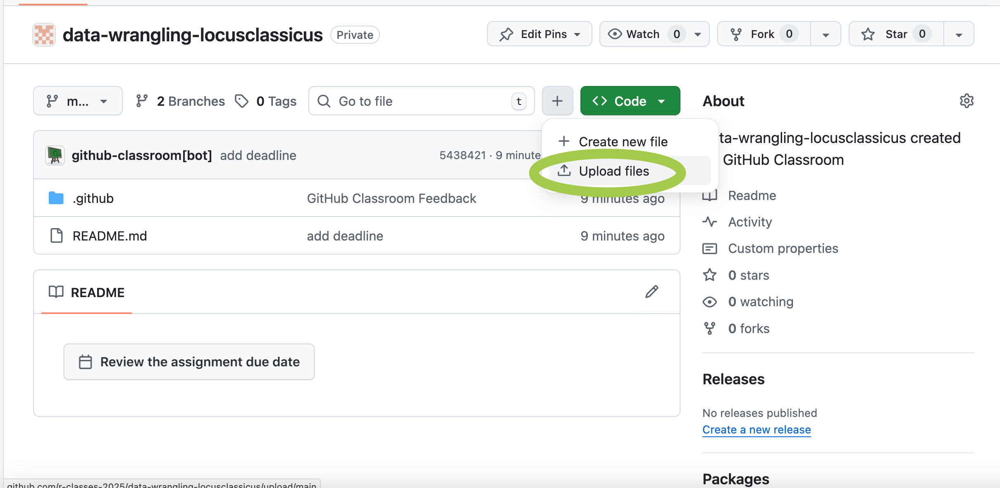

Существуют два основных “диалекта” R, один из которых опирается главным образом на функции и структуры данных базового R, а другой пользуется синтаксисом tidyverse. Tidyverse – это семейство пакетов (метапакет), разработанных Хадли Уикхемом и др., которое включает в себя в том числе пакеты dplyr, ggplot2 и многие другие.
# загрузить все семействоlibrary(tidyverse)
── Attaching core tidyverse packages ──────────────────────── tidyverse 2.0.0 ──
✔ dplyr 1.1.4 ✔ readr 2.1.6
✔ forcats 1.0.0 ✔ stringr 1.6.0
✔ ggplot2 4.0.1 ✔ tibble 3.3.0
✔ lubridate 1.9.4 ✔ tidyr 1.3.1
✔ purrr 1.2.0
── Conflicts ────────────────────────────────────────── tidyverse_conflicts() ──
✖ dplyr::filter() masks stats::filter()
✖ dplyr::lag() masks stats::lag()
ℹ Use the conflicted package (<http://conflicted.r-lib.org/>) to force all conflicts to become errors
2.2 Импорт табличных данных
В этом уроке мы будем работать с датасетом из Репозитория открытых данных по русской литературе и фольклору под названием “Программы по литературе для средней школы с 1919 по 1991 гг.” Этот датасет был использован при подготовке интерактивной карты российского школьного литературного канона (1852-2023). Карта была представлена в 2023 г. Лабораторией проектирования содержания образования ВШЭ. Подробнее о проекте можно посмотреть материал “Системного блока”.
Основная функция для скачивания файлов из Сети – download.file(), которой необходимо задать в качестве аргументов url, название сохраняемого файла, иногда также метод.
url <-"https://dataverse.pushdom.ru/api/access/datafile/4229"# скачивание в папку files в родительской директорииdownload.file(url, destfile ="../files/curricula.tsv")
Файл, который мы скачали, имеет расширение .tsv (tab separated values). Чтобы его прочитать, используем read_tsv() из пакета {readr}:
Rows: 10306 Columns: 8
── Column specification ────────────────────────────────────────────────────────
Delimiter: "\t"
chr (6): author, title, comment, curriculum, year, priority
dbl (2): id, grade
ℹ Use `spec()` to retrieve the full column specification for this data.
ℹ Specify the column types or set `show_col_types = FALSE` to quiet this message.
Функция class() позволяет убедиться, что перед нами датафрейм или тиббл.
class(curricula_tbl)
[1] "spec_tbl_df" "tbl_df" "tbl" "data.frame"
Основная структура данных в tidyverse – это tibble, современный вариант датафрейма. Тиббл, как говорят его разработчики, это ленивые и недовольные датафреймы: они делают меньше и жалуются больше. Это позволяет решать проблемы на более ранних этапах, что, как правило, приводит к созданию более чистого и выразительного кода.
Основные отличия от обычного датафрейма:
усовершенствованный метод print(), не нужно постоянно вызывать head();
нет имен рядов;
допускает синтаксически “неправильные” имена столбцов;
при индексировании не превращается в вектор.
Задание
Установите курс swirl::install_course("Getting and Cleaning Data"). Загрузите библиотеку library(swirl), запустите swirl(), выберите этот курс и пройдите из него урок 1 Manipulating Data with dplyr. При попытке загрузить урок 1 вы можете получить сообщение об ошибке. В таком случае установите версию курса из github, как указано здесь, или загрузите файл вручную, как указано здесь.
2.3 Dplyr
В уроке {swirl} выше вы уже немного познакомились с “грамматикой манипуляции данных”, лежащей в основе dplyr. Здесь об этом будет сказано подробнее. Эта грамматика предоставляет последовательный набор глаголов, которые помогают решать наиболее распространенные задачи манипулирования данными:
mutate() добавляет новые переменные, которые являются функциями существующих переменных;
select() выбирает переменные (столбцы) на основе их имен;
filter() выбирает наблюдения (ряды) на основе их значений;
summarise() обобщает значения;
arrange() изменяет порядок следования строк.
Все эти глаголы естественным образом сочетаются с функцией group_by(), которая позволяет выполнять любые операции “по группам”, и с оператором pipe|> из пакета magrittr.
В итоге получается более лаконичный и читаемый код. Узнаем, за какие года у нас есть программы по литературе.
Теперь упражнения в {swirl}. Вам придется редактировать код, который предложит программа, так что сгруппируйтесь.
Задание
Запустите swirl(), выберите курс Getting and Cleaning Data и пройдите из него урок 2 Grouping and Chaining with dplyr.
2.4 Опрятные данные
Tidy datasets are all alike, but every messy dataset is messy in its own way.
— Hadley Wickham
Tidyverse – это не только особый синтаксис, но и отдельная идеология “опрятных данных”. “Сырые” данные, с которыми мы работаем, редко бывают опрятны, и перед анализом их следует “почистить” и преобразовать.
Посмотрите на учебные тибблы из пакета tidyr и подумайте, какое из этих правил нарушено в каждом случае.
data("table2")table2 |>print()
# A tibble: 12 × 4
country year type count
<chr> <dbl> <chr> <dbl>
1 Afghanistan 1999 cases 745
2 Afghanistan 1999 population 19987071
3 Afghanistan 2000 cases 2666
4 Afghanistan 2000 population 20595360
5 Brazil 1999 cases 37737
6 Brazil 1999 population 172006362
7 Brazil 2000 cases 80488
8 Brazil 2000 population 174504898
9 China 1999 cases 212258
10 China 1999 population 1272915272
11 China 2000 cases 213766
12 China 2000 population 1280428583
data("table3")table3 |>print()
# A tibble: 6 × 3
country year rate
<chr> <dbl> <chr>
1 Afghanistan 1999 745/19987071
2 Afghanistan 2000 2666/20595360
3 Brazil 1999 37737/172006362
4 Brazil 2000 80488/174504898
5 China 1999 212258/1272915272
6 China 2000 213766/1280428583
data("table4a")table4a |>print()
# A tibble: 3 × 3
country `1999` `2000`
<chr> <dbl> <dbl>
1 Afghanistan 745 2666
2 Brazil 37737 80488
3 China 212258 213766
data("table4b")table4b |>print()
# A tibble: 3 × 3
country `1999` `2000`
<chr> <dbl> <dbl>
1 Afghanistan 19987071 20595360
2 Brazil 172006362 174504898
3 China 1272915272 1280428583
Важные функции для преобразования данных из пакета tidyr:
separate() делит один столбец на новые;
unite() объединяет столбцы;
pivot_longer() удлиняет таблицу;
pivot_wider() расширяет таблицу;
drop_na() и replace_na() указывают, что делать с NA и др.
Кроме того, в dplyr есть полезное семейство функций _join, позволяющих объединять данные в различных таблицах.
Дальше мы потренируемся с ними работать, но сначала пройдем урок swirl. Это достаточно сложный урок (снова понадобится редактировать скрипт), но он нам дальше здорово поможет.
Задание
Запустите swirl(), выберите курс Getting and Cleaning Data и пройдите из него урок 3 Tidying Data with tidyr.
Прежде чем двигаться дальше, приведите в порядок table2, 3, 4a-4b, используя dplyr и tidyr.
2.5 Обобщение данных
Теперь вернемся к датасету curricula_tbl и попробуем частично воспроизвести результаты, полученные авторами проекта “Список чтения”, упомянутого выше.
У каких авторов больше всего произведений (во всех программах)?
# A tibble: 1,624 × 3
# Groups: author [461]
author title n
<chr> <chr> <int>
1 Горький М. Мать 51
2 Некрасов Н.А. Кому на Руси жить хорошо 50
3 Пушкин А.С. Евгений Онегин 49
4 Островский А.Н. Гроза 48
5 Тургенев И.С. Отцы и дети 48
6 Гоголь Н.В. Мертвые души 47
7 Грибоедов А.С. Горе от ума 47
8 Лермонтов М.Ю. Герой нашего времени 46
9 Толстой Л.Н. Война и мир 46
10 Толстой Л.Н. Воскресение 46
# ℹ 1,614 more rows
Какие произведения упоминаются в программах чаще всего?
# A tibble: 1,624 × 3
author title n
<chr> <chr> <int>
1 Горький М. Мать 51
2 Некрасов Н.А. Кому на Руси жить хорошо 50
3 Пушкин А.С. Евгений Онегин 49
4 Островский А.Н. Гроза 48
5 Тургенев И.С. Отцы и дети 48
6 Гоголь Н.В. Мертвые души 47
7 Грибоедов А.С. Горе от ума 47
8 Лермонтов М.Ю. Герой нашего времени 46
9 Толстой Л.Н. Война и мир 46
10 Толстой Л.Н. Воскресение 46
# ℹ 1,614 more rows
На принятые в каких годах программы приходится больше всего произведений? (Объяснение здесь.)
После этого GitHub создаст репозиторий для сдачи домашнего задания.
Создайте на своем компьютере файл hw1.R, отредактируйте его, используя заготовку ниже.
#devtools::install_github("ropensci/gutenbergr")library(gutenbergr)library(tidyverse)works <-gutenberg_works()# В каждом пункте используйте оператор pipe, не сохраняйте промежуточные результаты!# (1) Отберите ряды, в которых gutenberg_author_id равен 65 или 410;# после этого выберите два столбца: author, titlemy_data <- works |># ваш код здесь# (2) Используйте функцию separate(), чтобы разделить # столбец с именем и фамилией на два новых: author, name. # Удалите столбец namemy_data2 <- my_data |># ваш код здесь# (3) Используйте group_by() и summarise(), чтобы узнать,# сколько произведений Шекспира и Марлоу хранится в библиотеке Gutenbergmy_data3 <- my_data2 |># ваш код здесь
После этого любым способом загрузите свой файл в репозиторий. Если умеете в git, хорошо. Если нет, используйте кнопку Upload files.

Не меняйте имена переменных! Проверка будет автоматической.
Для пересчета года в век используйте следующую формулу: (deathdate - 1) %/% 100 + 1, где %/% – целочисленное деление.